OLL (Orientation of the Last Layer)
OLL is the third step of the CFOP method and solves the top face (yellow side).
Beginner OLL (also known as 2-look OLL) requires memorizing 10 algorithms and solves the top face in 2 steps: the first orients the edges, and the second orients the corners.
Note: in the pictures in this section, the blue squares on the cube are irrelevant to the step and are meant to be ignored.
OLL Tutorial
Step 1: Edge orientation
The first step of beginner OLL is the same as the "yellow cross" step in the beginner method, except each case can be solved with just one algorithm.
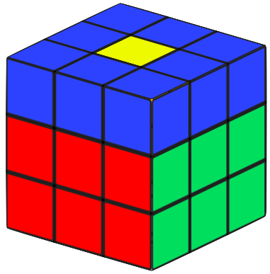
Case #1: Dot
If no edges are oriented on top, do this algorithm:
F (R U R' U') F' f (R U R' U') f'
Keep in mind that the orientation of the corner pieces don't matter for the first part of beginner OLL.
If no edges are oriented on top, do this algorithm:
F (R U R' U') F' f (R U R' U') f'
Keep in mind that the orientation of the corner pieces don't matter for the first part of beginner OLL.
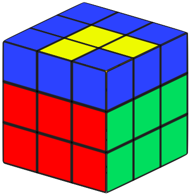
Case #2: Small L shape
If two adjacent edges are oriented on top, hold them on the front and right, and do this algorithm:
f (R U R' U') f'
If two adjacent edges are oriented on top, hold them on the front and right, and do this algorithm:
f (R U R' U') f'
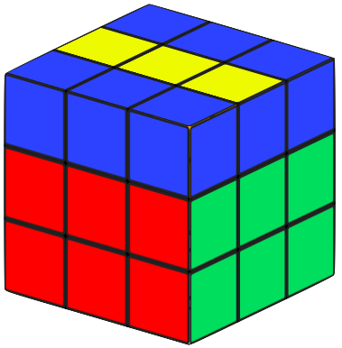
Case #3: Line
If two opposite edges are oriented on top, hold them on the left and right, and do this algorithm:
F (R U R' U') F'
If two opposite edges are oriented on top, hold them on the left and right, and do this algorithm:
F (R U R' U') F'
Step 2: Corner orientation
The next step is to orient the yellow corners. There are 7 cases for this step.
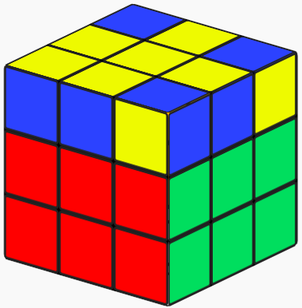
Case #1: Sune
If you get the case that looks like the image below, hold it like in the image below and do this algorithm:
R U R' U R U2 R'
If you get the case that looks like the image below, hold it like in the image below and do this algorithm:
R U R' U R U2 R'
Case #2: Antisune
If you get the case that looks like the images below, you have two options. You can either hold the cube like in the first image below and do the mirrored Sune case:
L' U' L U' L' U2 L'
Or you can hold the cube like in the second image below and do the inverse of the Sune algorithm:
R U2 R' U' R U' R'
If you get the case that looks like the images below, you have two options. You can either hold the cube like in the first image below and do the mirrored Sune case:
L' U' L U' L' U2 L'
Or you can hold the cube like in the second image below and do the inverse of the Sune algorithm:
R U2 R' U' R U' R'
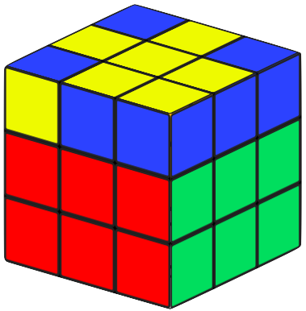
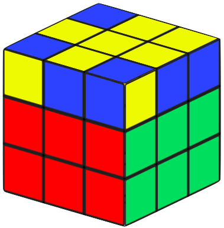
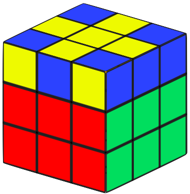
Case #3: H
If you get the case that looks like the image below, hold it like in the image below and do this algorithm:
F (R U R' U')3 F'
If you get the case that looks like the image below, hold it like in the image below and do this algorithm:
F (R U R' U')3 F'
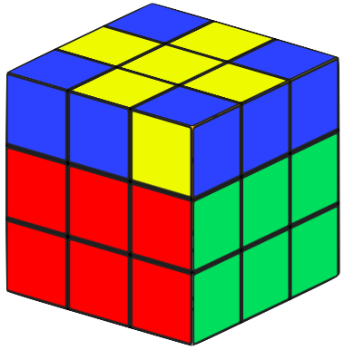
Case #4: Pi
If you get the case that looks like the image below, hold it like in the image below and do this algorithm:
R U2 R2 U' R2 U' R2 U2 R
This case is hard to tell apart from the "H" case. The "H" case has two yellow stickers facing out the same way (called "headlights"), and another set of headlights facing the opposite direction. This case has just one set of headlights, because the other two corners have yellow stickers facing away from each other.
If you get the case that looks like the image below, hold it like in the image below and do this algorithm:
R U2 R2 U' R2 U' R2 U2 R
This case is hard to tell apart from the "H" case. The "H" case has two yellow stickers facing out the same way (called "headlights"), and another set of headlights facing the opposite direction. This case has just one set of headlights, because the other two corners have yellow stickers facing away from each other.
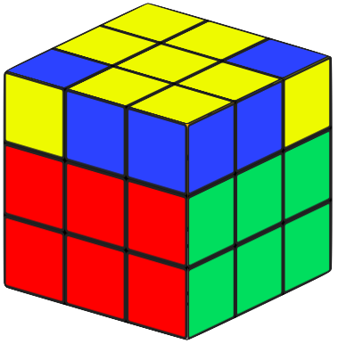
Case #5: L
If you get the case that looks like the image below, hold it like in the image below and do this algorithm:
x R' U R D' R' U' R D
If you get the case that looks like the image below, hold it like in the image below and do this algorithm:
x R' U R D' R' U' R D
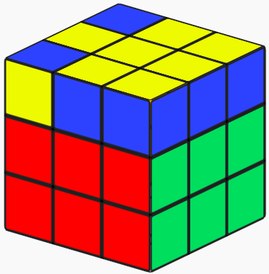
Case #6: T
If you get the case that looks like the image below, hold it like in the image below and do this algorithm:
r U R' U' L' U R U'
If you get the case that looks like the image below, hold it like in the image below and do this algorithm:
r U R' U' L' U R U'
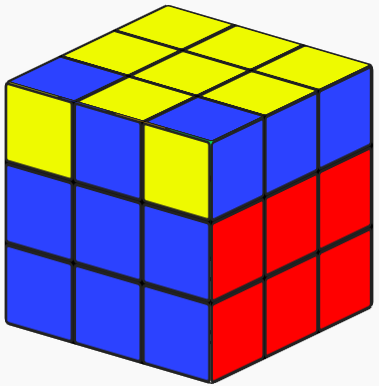
Case #7: U
This case's algorithm is harder to memorize than the others. If you get the case that looks like the image below, hold it like in the image below and do this algorithm:
R2 D R' U2 R D' R' U2 R'
This case's algorithm is harder to memorize than the others. If you get the case that looks like the image below, hold it like in the image below and do this algorithm:
R2 D R' U2 R D' R' U2 R'
Previous: F2L Next: PLL